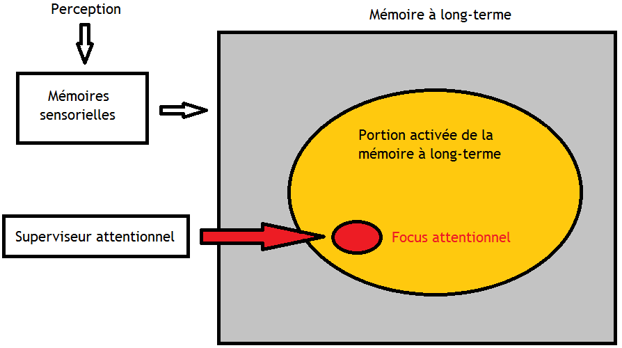
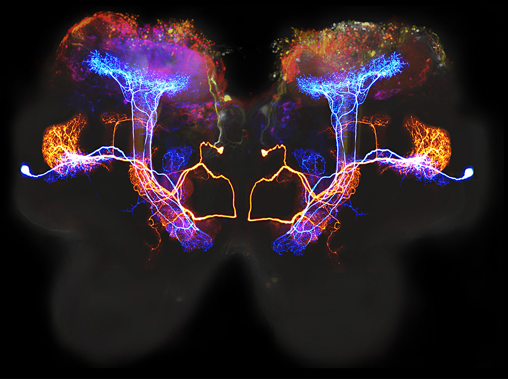
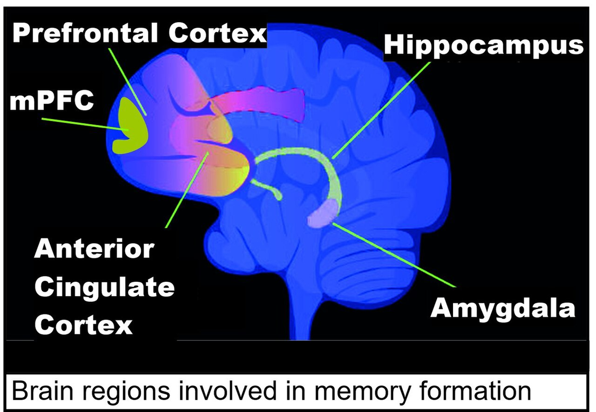
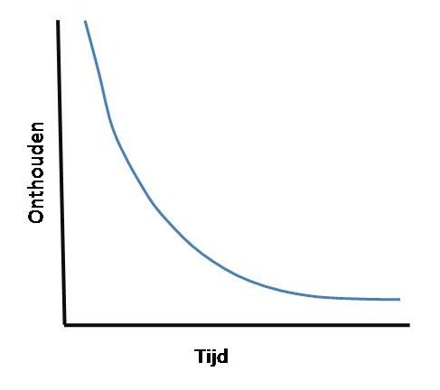
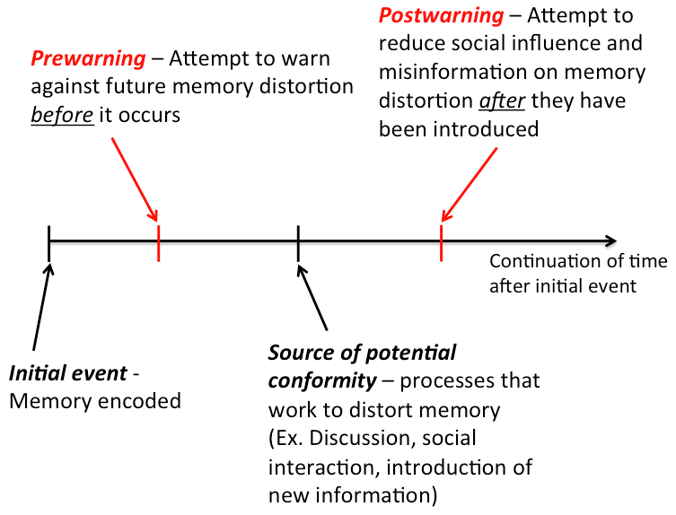

Memory
Right now you are reading these words, and a moment from now you will remember having read them — or you won't. Memory is the set of processes that let experience leave a trace: taking information in, holding onto it, and pulling it back out when you need it. It feels like a video recorder, faithfully capturing the past, but it is nothing of the sort. Memory is built, rebuilt, edited, and occasionally invented, which is exactly why it is one of the most useful and one of the most fallible things your mind does. This chapter follows a memory from the eye and ear all the way to the courtroom.
By the end of this chapter you can
- Name the three basic memory processes — encoding, storage, and retrieval — and the three stores of the multi-store model.
- Contrast sensory memory, short-term memory, and long-term memory by duration and capacity.
- Explain working memory and why it is more than a passive holding box.
- Distinguish automatic from effortful processing and apply the levels-of-processing effect.
- Separate explicit (declarative) from implicit (nondeclarative) memory and locate where each is handled in the brain.
- Compare recall and recognition, describe how retrieval cues work, and read Ebbinghaus's forgetting curve.
- Explain the misinformation effect and why eyewitness testimony is less reliable than it feels.
Section 1How memory works

Three jobs: encoding, storage, retrieval
Before we talk about where memories are kept, it helps to see what the mind is actually doing. Every memory passes through three processes. Encoding is getting information in — converting a sight, a sound, or an idea into a form the brain can hold. Storage is keeping it over time, whether for a fraction of a second or a lifetime. Retrieval is getting it back out. A failure at any one of the three feels the same from the inside — "I can't remember" — but the cause and the fix are different, and much of this chapter is about telling them apart.
The three-stage model
The most influential map of memory is the multi-store model, proposed by Richard Atkinson and Richard Shiffrin in 1968. It describes information flowing through three stores that differ dramatically in how much they hold and for how long. Incoming stimulation first lands in sensory memory, an enormous but fleeting buffer that holds a near-exact copy of what the senses just registered. Its visual form, iconic memory, lasts roughly a quarter of a second; its auditory form, echoic memory, lasts three to four seconds — long enough that you can "replay" the end of a sentence you weren't quite listening to. George Sperling demonstrated in 1960 that we briefly hold far more than we can report before the trace fades.
Whatever you pay attention to is passed on to short-term memory (STM), the small workspace of the moment. Left alone it holds information for only about fifteen to thirty seconds, and its capacity is famously limited — George Miller's 1956 estimate of "the magical number seven, plus or minus two" items, since revised downward to about four chunks by later researchers such as Nelson Cowan. Chunking — grouping items into meaningful units, the way a phone number becomes three clusters instead of ten digits — is how we stretch that tiny capacity. Rehearsing material, or encoding it deeply, moves it into long-term memory (LTM), the relatively permanent store whose capacity has no known limit.
| Store | Duration | Capacity | Example |
|---|---|---|---|
| Sensory memory | Iconic ≈ 0.25 s; echoic 3–4 s | Very large (a full copy of the input) | The lingering "trail" of a sparkler |
| Short-term / working | ≈ 15–30 s without rehearsal | Small — about 4 (up to 7 ± 2) chunks | Holding a phone number to dial it |
| Long-term memory | Minutes to a lifetime | Essentially unlimited | Your name, your childhood home |
From short-term to working memory
Calling the middle store "short-term memory" makes it sound like a passive shelf where items sit and slowly slide off. Alan Baddeley and Graham Hitch argued in 1974 that it is really an active working memory — a mental workbench where you not only hold information but manipulate it. In their model a central executive directs attention and coordinates two specialist assistants: a phonological loop that juggles sounds and words (this is the voice repeating a number in your head) and a visuospatial sketchpad that handles images and locations. Working memory is what you use to do mental arithmetic, follow directions, or keep a sentence in mind while deciding how it should end.
- Memory involves three processes: encoding (in), storage (keep), and retrieval (out).
- The multi-store model (Atkinson & Shiffrin) runs information through sensory, short-term, and long-term memory.
- Sensory memory is huge but lasts under a second (iconic) to a few seconds (echoic); STM holds about 4 chunks for 15–30 seconds; LTM is essentially unlimited.
- Working memory (Baddeley & Hitch) is an active workspace, not a passive shelf.
Section 2Encoding: getting memories in

Automatic versus effortful processing
Some information slips into long-term memory with no work at all. Automatic processing encodes details such as space, time, and frequency, along with well-practiced material, without conscious attention: you can usually say roughly where on a page a fact appeared, what you did yesterday, or what a familiar word means, without ever having "tried" to remember. Most of what school and work demand, however, requires effortful processing — deliberate attention, rehearsal, and strategy. A definition, a formula, or a new name will not stick simply because it passed in front of you; it has to be worked on.
The most basic effortful strategy is rehearsal, and it comes in two kinds that are not equally useful. Maintenance rehearsal is simple repetition — saying a number over and over — which keeps material alive in working memory but does little for long-term retention. Elaborative rehearsal connects new material to what you already know, and it is far more powerful. That difference is the heart of the next idea.
Levels of processing
Fergus Craik and Robert Lockhart proposed in 1972 that memory strength depends not on how long you hold something but on how deeply you process it — the levels-of-processing effect. Shallow (structural) processing notices only surface features, such as whether a word is printed in capital letters. Intermediate (phonemic) processing attends to sound — whether it rhymes with another word. Deep (semantic) processing engages meaning: what the word signifies, how it fits a sentence, how it relates to you. The deeper the level, the better the later recall, even when total study time is identical.
| Level | What you focus on | Sample question about the word BRAIN | Later recall |
|---|---|---|---|
| Shallow (structural) | Appearance | Is it in capital letters? | Poor |
| Intermediate (phonemic) | Sound | Does it rhyme with train? | Moderate |
| Deep (semantic) | Meaning | Would it fit in "The surgeon examined the ___"? | Best |
Several well-studied techniques all work by forcing deeper, better-organized encoding. Mnemonics impose a structure on arbitrary material (acronyms, the method of loci, peg words). The self-reference effect shows that relating information to yourself — "has this ever happened to me?" — produces some of the strongest memory of all. The spacing effect (distributed practice) means that study spread over days beats the same hours crammed into one. And the testing effect shows that retrieving information — quizzing yourself — encodes it better than re-reading ever will.
- Automatic processing encodes space, time, frequency, and well-learned material effortlessly; most learning needs effortful processing.
- Elaborative rehearsal (connecting to prior knowledge) far outperforms maintenance rehearsal (mere repetition).
- The levels-of-processing effect: deep semantic encoding beats shallow structural or phonemic encoding.
- Spacing, the self-reference effect, mnemonics, and the testing effect all strengthen encoding.
Section 3Long-term memory: kinds and places

Explicit and implicit memory
Long-term memory is not one thing. Its major split is between memories you can consciously bring to mind and memories that shape your behavior without any awareness at all. Explicit (declarative) memory holds facts and experiences you can deliberately recall and "declare." Endel Tulving divided it further into semantic memory — general knowledge, such as the capital of France or the meaning of a word — and episodic memory, the record of personally experienced events, such as your last birthday. Implicit (nondeclarative) memory, by contrast, operates outside awareness. It includes procedural memory for skills (riding a bike, typing), the effects of classical conditioning, and priming, in which a recent exposure speeds later recognition without your knowing why.
| Type | Conscious? | Subtypes | Example |
|---|---|---|---|
| Explicit (declarative) | Yes — you can state it | Semantic; episodic | "Paris is the capital of France"; "my first day of school" |
| Implicit (nondeclarative) | No — expressed in behavior | Procedural; conditioning; priming | Riding a bike; flinching at a sound; finishing a familiar phrase |
Where memories live
Different memory systems depend on different brain structures — which is why brain damage can erase one kind of memory while sparing another. The hippocampus, deep in the temporal lobe, is essential for forming new explicit memories and shipping them out to the cortex for long-term keeping, a process called consolidation. The amygdala, sitting just beside it, tags memories with emotion, which is why frightening or thrilling events are often remembered vividly. Implicit memories rely on older structures: the cerebellum stores classically conditioned reflexes, and the basal ganglia support procedural skills and habits. Long-term explicit memories themselves are not filed in a single spot — they are distributed across the cerebral cortex, reassembled from pieces when you retrieve them.
The most famous evidence for this division is the patient H.M. (Henry Molaison), whose hippocampus was removed on both sides in 1953 to treat severe epilepsy. Afterward he could form almost no new explicit memories — he met the same people as strangers day after day (anterograde amnesia) — yet he could still learn new motor skills, improving on a tracing task each day while insisting he had never done it before. His explicit memory was destroyed; his implicit memory was intact. At the cellular level, memory storage is thought to involve long-term potentiation (LTP), a lasting strengthening of the connections between neurons that fire together. Eric Kandel's research on the sea slug Aplysia, tracing how learning strengthens synapses, earned a share of the 2000 Nobel Prize.
- Explicit (declarative) memory is conscious and splits into semantic (facts) and episodic (events); implicit memory (procedural, conditioning, priming) runs without awareness.
- The hippocampus forms new explicit memories and drives consolidation; the amygdala adds emotion.
- The cerebellum and basal ganglia support implicit/procedural memory; long-term explicit memories are distributed across the cortex.
- H.M. lost the ability to form new explicit memories but kept implicit learning; LTP is the synaptic basis of storage.
Section 4Retrieval and forgetting

Recall, recognition, and cues
Getting information out again comes in different flavors, and they are not equally hard. Recall means producing information without help, the way a fill-in-the-blank or essay question demands. Recognition means identifying the right answer among options, as in a multiple-choice question — much easier, because the answer is in front of you. A third measure, relearning, shows that material once learned and apparently forgotten is re-acquired faster the second time; the time saved is called savings, and it reveals memory that recall and recognition miss.
Retrieval usually needs a retrieval cue — a reminder that leads back to the stored information. Cues are most effective when they match the conditions of encoding, a principle called encoding specificity. In context-dependent memory, being in the same place aids recall: Godden and Baddeley found in 1975 that scuba divers who learned word lists underwater recalled them best underwater, and lists learned on land were best remembered on land. In state-dependent and mood-congruent memory, your internal state at retrieval — sober or intoxicated, happy or sad — can act the same way. The serial position effect is a retrieval quirk worth knowing: from a list you tend to remember the first items (the primacy effect, rehearsed into LTM) and the last items (the recency effect, still in working memory) better than the middle.
Why we forget
Hermann Ebbinghaus, testing himself on nonsense syllables in the 1880s, plotted the first forgetting curve: retention drops sharply within the first hours and days after learning, then flattens, so that what survives the first week tends to endure. Forgetting is not one problem but several. Encoding failure means the information never made it into long-term memory in the first place — you cannot lose what you never stored, which is why you cannot draw a coin you have handled thousands of times. Storage decay is the fading of an unused trace over time. Retrieval failure is information that is stored but momentarily inaccessible — the maddening tip-of-the-tongue state. And interference occurs when memories compete: in proactive interference old learning disrupts new (last year's locker combination intrudes on this year's), and in retroactive interference new learning disrupts old.
| Reason for forgetting | What went wrong | Everyday example |
|---|---|---|
| Encoding failure | Never stored (usually inattention) | Can't recall a coin's exact design |
| Storage decay | Trace faded with disuse | A language you haven't spoken in years |
| Retrieval failure | Stored but momentarily unreachable | A name on the tip of your tongue |
| Interference | Other memories compete | New phone number blocks the old one |
- Recall (produce it) is harder than recognition (identify it); relearning reveals hidden savings.
- Retrieval cues work best when they match encoding (encoding specificity); context, state, and mood can all serve as cues.
- The serial position effect favors the first (primacy) and last (recency) items of a list.
- We forget through encoding failure, storage decay, retrieval failure, and interference; the forgetting curve drops fast then levels, and spaced review flattens it.
Section 5Memory errors and eyewitnesses

Memory is reconstructed, not replayed
The single most important fact about memory is that it does not work like video. Frederic Bartlett showed in the 1930s that people remember stories by fitting them to their existing schemas — frameworks of expectation — dropping unfamiliar details and adding ones that "should" have been there. Retrieval is an act of reconstruction: the brain reassembles a memory from fragments each time, and it fills gaps with plausible inference. Usually this works well enough. But it means every act of remembering is also an opportunity to change the memory, and the changes feel exactly as real as the truth.
The clearest demonstration is the misinformation effect, documented by Elizabeth Loftus: information encountered after an event can quietly alter the memory of it. In the classic 1974 study by Loftus and Palmer, people watched a filmed car crash and were asked how fast the cars were going when they "hit" — or "smashed into" — each other. The single changed verb pushed speed estimates higher, and a week later those asked about cars that "smashed" were more likely to falsely remember seeing broken glass that was never in the film. Related failures include source amnesia (misattributing where a memory came from) and outright false memories: Loftus's "lost in the mall" studies successfully implanted entire fabricated childhood events in a substantial minority of participants simply through suggestion.
Eyewitnesses and the courtroom
These are not laboratory curiosities. Eyewitness testimony is among the most persuasive evidence a jury can hear, and it is far less reliable than its confidence suggests. Accuracy is degraded by leading questions, by weapon focus (attention narrows onto a weapon and away from the face), by stress, by the cross-race effect (people identify faces of their own race more accurately), and by suggestive lineup procedures. Crucially, a witness's confidence is a poor guide to accuracy — and confidence can be inflated after the fact by nothing more than an officer saying "good, that's the one." The stakes are real: analyses by the Innocence Project found that mistaken eyewitness identification contributed to roughly 70% of the U.S. convictions later overturned by DNA evidence.
| Factor | Effect on eyewitness accuracy |
|---|---|
| Leading questions / suggestion | Can implant details that were never present |
| Weapon focus | Attention on the weapon reduces memory for the face |
| Cross-race identification | Own-race faces are identified more accurately |
| Post-event feedback | Inflates confidence without improving accuracy |
| High stress / brief exposure | Weakens encoding of details |
Because the errors are built into how memory works, the remedies are procedural. Researchers have pushed for double-blind lineups (the administrator does not know the suspect), unbiased instructions that the culprit may be absent, recording of the witness's confidence at the moment of identification, and the cognitive interview, a questioning method that avoids leading and lets the witness retrieve freely. These reforms do not make memory a recording — nothing can — but they keep the reconstruction honest.
- Memory is reconstructive: retrieval rebuilds the memory and fills gaps using schemas, which can introduce error.
- The misinformation effect (Loftus) shows post-event information distorts memory; suggestion can implant entirely false memories.
- Eyewitness accuracy is degraded by leading questions, weapon focus, the cross-race effect, and post-event feedback; confidence does not equal accuracy.
- Mistaken identification is a leading cause of wrongful convictions; procedural reforms like double-blind lineups and the cognitive interview reduce the risk.
The chapter in one breath
- Memory runs on three processes — encoding, storage, retrieval — and the multi-store model passes information through sensory, short-term, and long-term memory.
- Sensory memory is huge but under a second (iconic) to a few seconds (echoic); short-term/working memory holds about four chunks briefly and actively manipulates them; LTM is essentially unlimited.
- Encoding ranges from automatic to effortful; the levels-of-processing effect means deep, meaningful encoding — helped by spacing, self-reference, and self-testing — beats shallow repetition.
- Long-term memory divides into explicit (semantic + episodic) and implicit (procedural, conditioning, priming), handled by the hippocampus, amygdala, cerebellum, and cortex; H.M. proved these systems are separate.
- Recall is harder than recognition; retrieval cues and the serial position effect shape what we get back, and the forgetting curve drops fast then levels, flattened by spaced review.
- Memory is reconstructive, so the misinformation effect and reconstructive error make eyewitness testimony less reliable than its confidence implies — a cause of wrongful convictions and the reason for procedural reform.
ReferenceWords worth knowing
A quick reference for the terms in this chapter — skim it now, or circle back whenever a word trips you up.
- Amnesia
- Memory loss; anterograde amnesia blocks the formation of new memories, retrograde amnesia erases memories from before the injury.
- Automatic processing
- Encoding of information such as space, time, frequency, and well-learned material with little or no conscious effort.
- Chunking
- Grouping items into meaningful units to expand the limited capacity of short-term memory.
- Effortful processing
- Encoding that requires attention and conscious work, such as rehearsal or study.
- Encoding
- The process of getting information into memory by converting it into a usable form.
- Episodic memory
- Explicit memory of personally experienced events, tied to a time and place.
- Explicit (declarative) memory
- Memory of facts and experiences that one can consciously retrieve and state.
- Forgetting curve
- Ebbinghaus's finding that retention drops steeply soon after learning, then levels off.
- Hippocampus
- A temporal-lobe structure essential for forming new explicit memories and consolidating them.
- Implicit (nondeclarative) memory
- Memory expressed through behavior without conscious awareness; includes procedural skills, conditioning, and priming.
- Interference
- Forgetting caused by competition between memories; proactive (old disrupts new) and retroactive (new disrupts old).
- Levels of processing
- The principle that deeper, meaning-based (semantic) encoding produces stronger memory than shallow encoding.
- Long-term memory (LTM)
- The relatively permanent store with essentially unlimited capacity.
- Long-term potentiation (LTP)
- A lasting strengthening of synaptic connections thought to be the neural basis of learning and memory.
- Misinformation effect
- The distortion of memory by misleading information encountered after an event.
- Recall
- Retrieving information without cues, as in a fill-in-the-blank question.
- Recognition
- Identifying previously learned information among options, as in a multiple-choice question.
- Retrieval
- The process of getting stored information back out of memory.
- Semantic memory
- Explicit memory for general knowledge and facts, independent of when they were learned.
- Sensory memory
- The brief, high-capacity store that holds a near-exact copy of sensory input (iconic and echoic).
- Serial position effect
- The tendency to best recall the first (primacy) and last (recency) items of a list.
- Working memory
- The active workspace (Baddeley & Hitch) that holds and manipulates information, coordinated by a central executive.